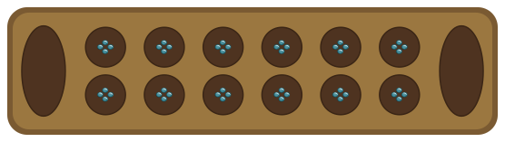
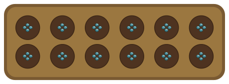
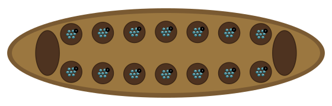

Mancala sow-path layouts. Two rows of pits with optional stores, seeds distributed counter-clockwise. The topology defines the path; the plugin defines capture, extra turns, and scoring.
The pit topology provides a sowing path: pick up all seeds from a pit, drop one in each subsequent pit. What happens on the last seed (capture, extra turn, relay) is the plugin's concern. The topology just knows the path.
The most common Western mancala. Six pits per side with stores. Capture by landing in an empty pit on your side. Extra turn when the last seed lands in your store. The topology provides the Kalah-correct sowing path (skip opponent's store).
engine:
topology:
type: pit
players: [south, north]
setup: "4,4,4,4,4,4;0;4,4,4,4,4,4;0"
Kalah (6 pits per side + stores) — Kalah-correct sow path
West African mancala with no stores. Capture by making the opponent's pit contain exactly 2 or 3 seeds. Seeds cycle continuously around the board. Same topology, different column count and no stores parameter.
engine:
topology:
type: pit
cols: 6
stores: false
players: [south, north]
render:
cellSize: 24
setup: "4,4,4,4,4,4;0;4,4,4,4,4,4;0"
Oware (6 pits, no stores) — capture at 2 or 3 seeds
Southeast Asian mancala with 7 pits per side and stores. Relay sowing: if the last seed lands in an occupied pit, pick up and continue. The topology scales to any pit count; relay logic lives in the plugin.
engine:
topology:
type: pit
cols: 7
players: [south, north]
setup: "7,7,7,7,7,7,7;0;7,7,7,7,7,7,7;0"
Congkak (7 pits per side) — relay sowing, more seeds
Mancala games from around the world, all on the same topology.